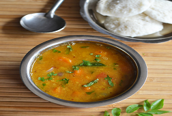

|  | Sambar is one of typical south Indian main lunch menu. Generally we make sambar for tiffin with moong dal, with both sambar and coconut chutney really testy. This recipe is not hard to make is just an easy method. |
Ingredients : 1/2 cup Tour Dal, 2 small Tomato, Carrot - 2 small, 1 heaped teaspoon Sambar powder, 2 pinches Turmeric powder, 1 tablespoon Water for Thin tamarind pulp or as required, 1 teaspoon Ghee, Salt as required, To temper: 2 teaspoon Oil, 1/2 teaspoon Mustard Seeds, 1/2 teaspoon Urad Dal, 10 Small Onion, 1/4 teaspoon Hing, 1/4 teaspoon Curry Leaves sprig, Fenugreek Seeds all ingredient roughly chopped. Method : Begin dal and fixed apart in a pressure cooker warmth oil put carrot and tomato saute checkout tomatoes becomes soppy then put dal with salt as required and turmeric powder, put water in pressure cook for at least 4 whistles in salt average flame. Allow pressure to discharge by itself. Crush the dal fine and warmth it up. Make a cream with powder of sambar and tiny water and put it to the sweltering sambar let it boil, put water if it come to be too thick let it boil for few mints, then insert tamarind water, in a kadai or pan insert the items listed in 'to temper' saute for a mint, Put it to sambar and leave again few mints on flame, then garnish by coriander leaves, put a teaspoon of ghee and stop heating and serve hot idlis with sambar.
|
||||

Crispy Pizza
Crispy Pizza and Pressed Panini authentic recipe One of the very famous Street Italian food.
Golden Chicken
Crispy and curried Golden chicken recipe for cooking Golden Chicken ghastly.